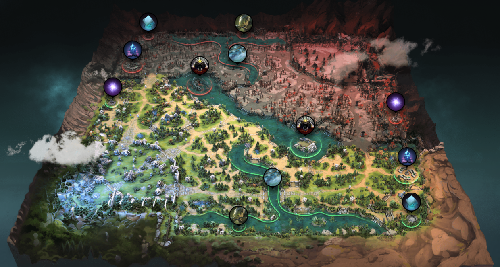

Основные механики
- Last hit — убийство крипов для золота
- Denial — добивание своих крипов
- Buyback — воскрешение за золото
- Teleport — телепорт на другую линию
Карта
Карта разделена на две части: Radiant и Dire. В каждой есть база, лес, линии, Рошан и руны.
Герои
Предметы
Интересные факты
- Первый турнир по Dota 2 имел призовой фонд $1,600,000.
- Самый популярный герой — Pudge.
- Самый дорогой предмет в игре — Divine Rapier.
- Roshan появляется каждые 10 минут.